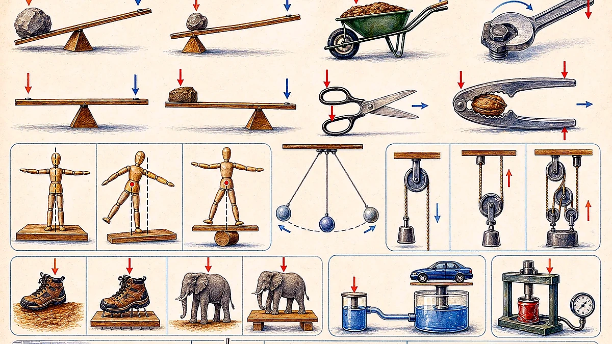
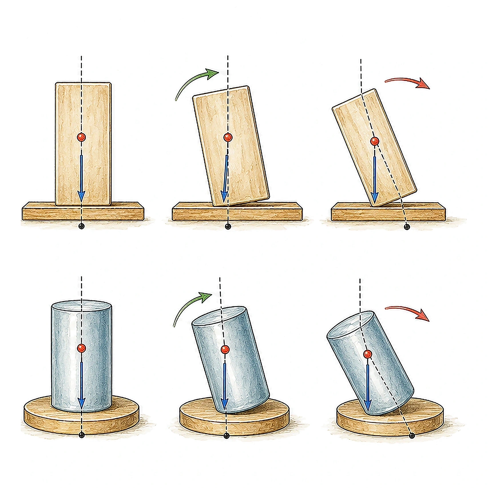
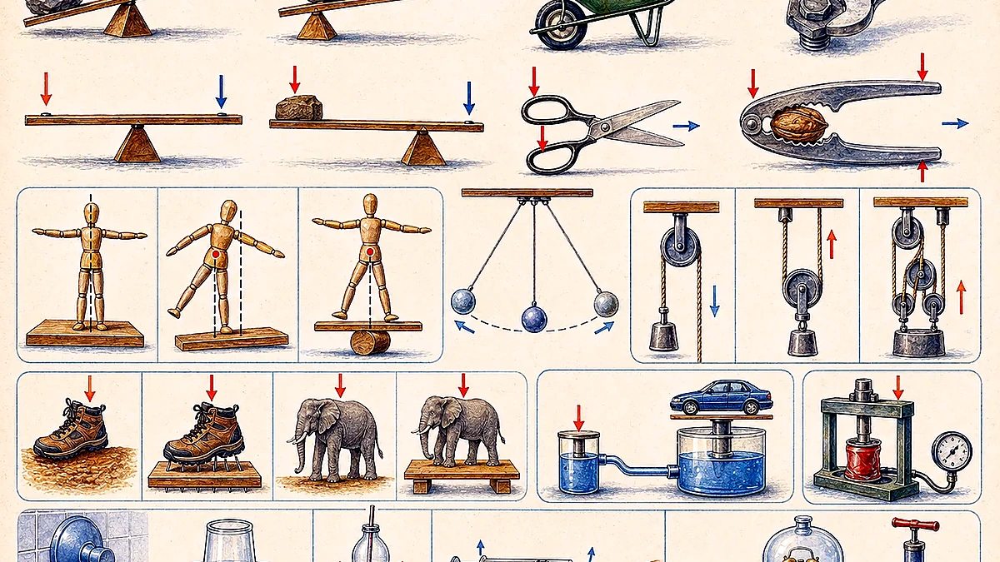
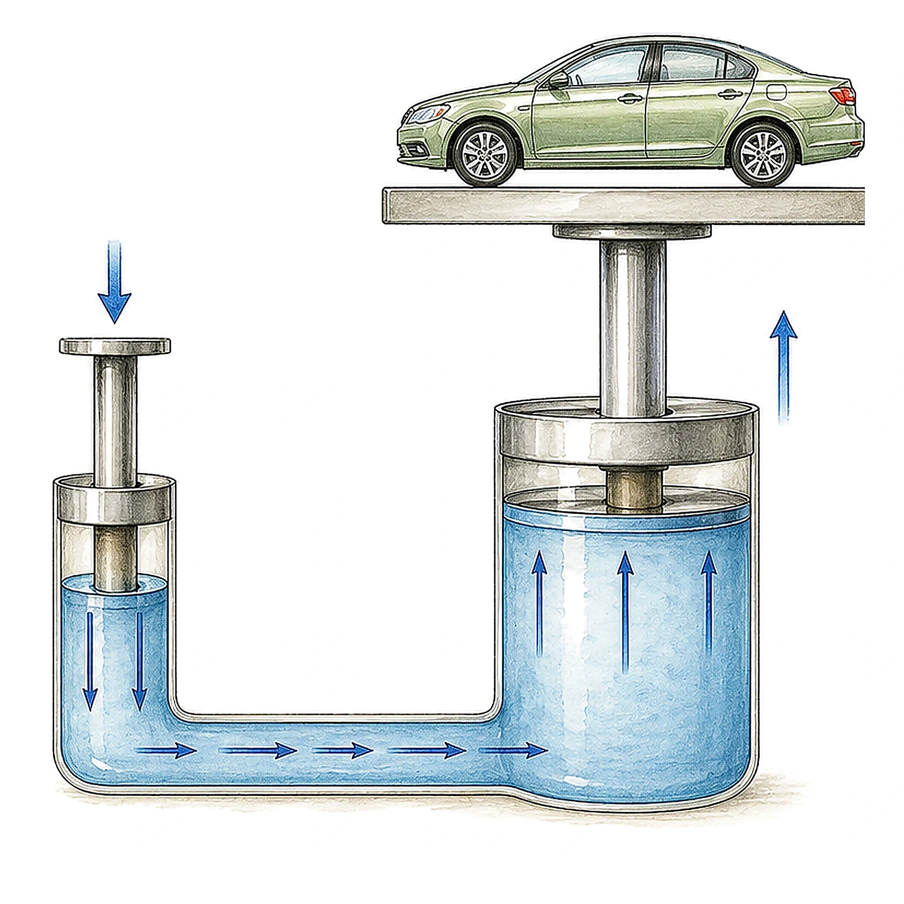
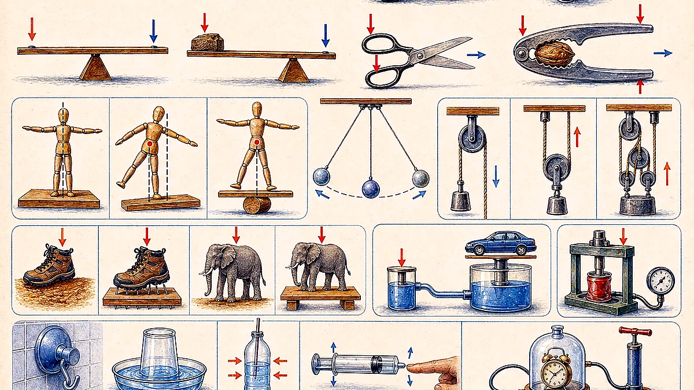

Turning Effect And Moment Of A Force
The turning effect of a force is also called the moment of a force. The moment is the product of the force and the perpendicular distance from the line of action of the force to the pivot.

moment = F x d
F is force in newtons, and d is perpendicular distance from the pivot in metres.
The unit for moment is newton metre, Nm.
Balanced object: clockwise moment = anticlockwise moment.
Three Classes Of Lever
Levers are rigid bars that rotate about a fulcrum. The three classes differ by the order of fulcrum, load, and effort.

| Class | Arrangement | Examples |
|---|---|---|
| Class 1 | Fulcrum between load and effort. | See-saw, scissors, pliers, crowbar. |
| Class 2 | Load between fulcrum and effort. | Wheelbarrow, nutcracker, bottle opener. |
| Class 3 | Effort between fulcrum and load. | Tweezers, broom, fishing rod, human forearm. |
Total weight is 150 N. The load acts 0.75 m from the wheel, and the handle force acts 1.5 m from the wheel. F x 1.5 = 150 x 0.75, so F = 75 N.
A 20 N foot force acts 40 cm from the pivot, while the piston is 5 cm from the pivot. 20 x 40 = F x 5, so F = 160 N.
Centre Of Gravity And Stability
The centre of gravity is the point where an object's weight can be treated as acting. If an object is tilted, it topples when the vertical line from its centre of gravity falls outside its base.
Standing passengers raise the centre of gravity, making the bus less stable.
A boat is more stable when weight is low and the line of action stays within the base of support.
Lower the centre of gravity and widen the base.
Different pipe and beam sections have different centre-of-gravity positions depending on their geometry.

Simple Pendulum
The scan gives the standard simple pendulum relationship: T = 2 pi sqrt(L/g). The period is the time for one complete oscillation.

For a given place, the period of oscillation is directly proportional to the square root of the pendulum length.
The period is independent of the bob's size, shape, mass, and material. For small swings, it is also treated as independent of amplitude.
Pulleys
A pulley is a simple machine made of a grooved wheel with a rope or cable passing through it. Pulleys can change the direction of a force and can make lifting heavy objects easier.

| Set-Up From The Scan | Effort For A 100 N Load | Distance Pulled To Lift 10 cm | Idea |
|---|---|---|---|
| One supporting rope segment | 100 N | 10 cm | Changes direction only. |
| Two supporting rope segments | 50 N | 20 cm | Half the effort, twice the pull distance. |
| Three supporting rope segments | About 33 N | 30 cm | One-third the effort, three times the pull distance. |
Ideal pulley rule: tension is the same in one continuous rope. The upward force on a movable pulley equals the sum of the supporting rope tensions.
Pressure
Pressure depends on both force and area. This is why a stiletto heel can feel more painful than a much heavier object spread over a larger area.

Pressure = force / area
Force is measured in newtons, area in m^2, and pressure in N/m^2.
Another name for N/m^2 is the pascal, Pa.
| Calculation | Working | Answer |
|---|---|---|
| Box weight 250 N on area 0.25 m^2 | P = 250 / 0.25 | 1000 Pa |
| Water force 6000 N over area 0.2 m x 0.5 m | Area = 0.1 m^2, so P = 6000 / 0.1 | 60000 Pa |
Increasing And Reducing Pressure

A knife blade has a small contact area, so it produces enough pressure to cut fruit. Football boot studs have small contact areas, so they sink into the ground and provide grip.
Skis spread weight over a large area so the skier does not sink deeply into snow. Wall foundations use a large horizontal area so the wall does not sink into the ground.
Pascal's Principle
Pascal's law states that a pressure change at any point in a confined incompressible fluid is transmitted throughout the fluid so the same pressure change occurs everywhere. The principle was established by Blaise Pascal in 1653.

Hydraulic machines: if the output area is 10 times the input area, the output force can be 10 times the original force, ignoring losses.
Air Pressure And Atmospheric Pressure
Air has weight and presses on everything it touches. Atmospheric pressure is the force exerted on a surface by the column of air above it as gravity pulls the air toward Earth.

When air is removed from a can, outside atmospheric pressure can crush it inward.
About 1013 millibars, or 760 millimetres (29.92 inches) of mercury.
Air pressure acts in all directions, not only downward.
What To Remember
Use force times perpendicular distance, and balance clockwise and anticlockwise moments.
An object topples when the vertical line from its centre of gravity falls outside its base.
More supporting rope segments reduce effort but increase the distance pulled.
Pressure equals force divided by area, and fluid pressure changes are transmitted through confined fluids.